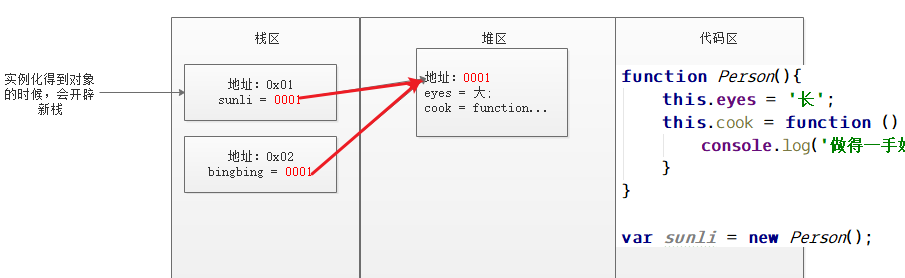
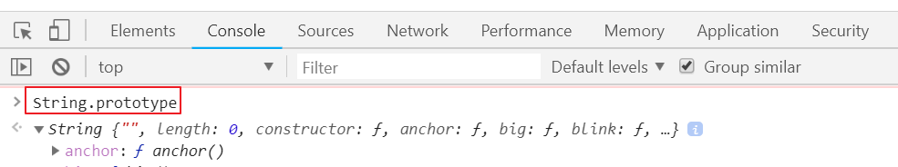

六、==JavaScript面向对象（重要）==
6.1、什么是对象
我喜欢大眼睛、长头发、大长腿、白皮肤、会洗衣服、会做饭、会生孩子的女孩，比如有孙俪，范冰冰。
这句话中描述的人的特点就是对象的属性，后面的两个人就是符合这个类的实例，也就是对象。
6.2、面向对象编程
面向对象编程简称OOP（Object-Oritened Programming）为软件开发人员敞开了一扇大门，它使得代码的编写更加简洁、高效、可读性和维护性增强。它实现了软件工程的三大目标：（代码）重用性、（功能）扩展性和（操作）灵活性，它的实现是依赖于面向对象的三大特性：封装、继承、多态。在实际开发中使用面向对象编程可以实现系统化、模块化和结构化的设计。它是每位软件开发员不可或缺的一项技能。
6.3、JavaScript自定义对象
回顾PHP，要得到一个对象，必须先定义一个类，然后通过 new 关键字实例化类，才能得到对象。另外，在实例化对象的时候，构造函数会自动执行。
1 |
|
在JavaScript中，准确的说是在==E==CMA==S==cript5中，没有明确类的概念，只有函数，所以要想得到一个自定义的对象，只能使用关键字 new 实例化一个函数。
在ES6中，才有类的概念。
==如果一个函数被实例化了，那么这个函数就叫做构造函数==，在学习的时候，==我们可以把构造函数当做类==。
10自定义对象.html 代码：
1 | //定义一个函数,下面实例化了这个函数，所以这个函数就叫做构造函数，也可以认为是类 |
在PHP中，构造函数，在实例化对象之后，会自动执行，JavaScript中的构造函数也有相同的特点：
1 | //定义一个函数,下面实例化了这个函数，所以这个函数就叫做构造函数，也可以认为是类 |
6.4、this关键字和对象成员
在JavaScript面向对象中，this也是一个伪对象，只能出现在构造函数内部。表示该构造函数的任意对象。
this很好理解，它和PHP中的 $this一个意思。
定义一个构造函数，并添加一些成员属性和成员方法：
1 |
|
6.5、delete关键字删除对象成员
前面学习过，在JavaScript中，delete可以删除没有var声明的变量。
delete关键字还可以删除对象中的成员，既可以删除成员属性，也可以删除成员方法
12delete删除对象成员.html
1 | /*var a = 1; |
6.6、对象在内存中的存在形式
1 | function Person(){ |
对应的内存图：

1 | function Person(){ |
6.7、直接量语法定义对象
直接量语法定义对象，也就是不用定义构造函数，而是直接定义一个变量，然后用一对大括号 {} 表示对象，这种形式的对象，里面也可以有成员属性和成员方法。
这部分知识前面已经学习过了。下面试着定义几个对象：
1 | var a = {}; //空对象 |
七、==系统对象==（会查手册）
内置对象，即JavaScript预定义的一些对象，这些对象中定义好了一些常用的方法。我们直接实例化（有些不需要实例化）这些对象，然后就可以使用这些方法了。
这部分涉及到的方法非常多，要求会查手册。手册位置：w3c手册—点导航的JavaScript—点左侧的JavaScript—点右侧的参考书。
7.1、Object对象
目前，可以认为Object是一个空对象。
Object对象也是一个构造器（构造函数），这个对象是其他所有对象的父对象，也就是说其他所有的对象都继承Object对象。==其他所有对象，包括DOM对象==。
7.2、String对象
字符串对象，对象内置了很多实用的属性和方法。
使用方法：
- 实例化String，并将要操作的字符串传递进去，然后通过对象调用成员。
- 把字符串当做对象，直接使用字符串调用成员。
1 | /****************** 下面演示使用String对象的两种方式 *******************/ |
下面演示一些常用的字符串方法：
1 | /********************************* indexOf() ************************/ |
通过浏览器可以查到系统对象中有哪些成员，方法是在浏览器的console区，输出String.prototype.

7.3、Date对象
使用方法，先new Date()，得到一个对象，然后用这个对象调用它里面的成员方法。
1 | var date = new Date(); //实例化Date对象 |
下面演示通过Date对象，获取当前的时间，格式为：“年-月-日 时:分:秒”
1 | //自定义函数，判断如果数字小于10，则在其前面加0。如把 9 变成 09 |
7.4、Array对象
数组就是对象，所以可以直接使用数组调用Array对象的成员属性和方法。
下面演示常用的Array对象的成员属性和方法：
1 | //定义用于测试的数组 |
7.5、Math对象
用法：无需实例化对象，直接使用“ Math.成员”即可，比如 Math.random();
下面列举一些Math对象属性和方法：
1 | //属性： |
7.6、window对象
window对象和下面要讲到的 Navigator、Screen 、History 、Location都属于浏览器对象，即BOM对象。
javascript:ECMAScript DOM BOM
==window对象的成员在被调用时，可以省略window==。
下面列举window对象中常用方法：
1 | alert(); -- 弹出一个警告框 |
open方法用于打开一个新浏览器窗口，经常用于弹窗。下面演示open方法的使用：
1 | <input type="button" value="手机预览" id="btn" /> |
window对象中定时器方法也是非常有用且常见的方法：
基本用法如下：
1 | var s =setTimeout("js代码或js函数", 毫秒数) //表示多少毫秒后，执行前面的js代码或函数，只执行一次 |
7.7、navigator对象
navigator对象包含有关浏览器的信息。
没有应用于 navigator 对象的公开标准，不过所有浏览器都支持该对象。
经检测，navigator对象中有用的属性只有一个，它是 navigator.userAgent，从这个结果中可以查看到浏览器及浏览器的版本。
1 | console.log(navigator.userAgent); //不同浏览器结果不同 |
7.8、screen对象
屏幕对象，通过该对象可以获取到电脑显示器的高度和宽度。
1 | document.write(screen.width + "*" + screen.height); //输出分辨率，宽度*高度 |
7.9、history对象
history 对象包含用户（在浏览器窗口中）访问过的 URL。
1 | history.back(); //加载 history 列表中的前一个 URL。 相当于后退 |
7.10、location对象
location 对象包含有关当前 URL 的信息。
下面是location对象的一些属性：
1 | document.write(location.hash + '<br>'); // 设置或返回从井号 (#) 开始的 URL（锚）。 |
location对象中比较有用的方法是 reload().它可以刷新当前的页面：
1 | location.reload(); //刷新页面，和点击刷新按钮一个效果 |
1 | <input type="button" value="刷新" id="sx"> |